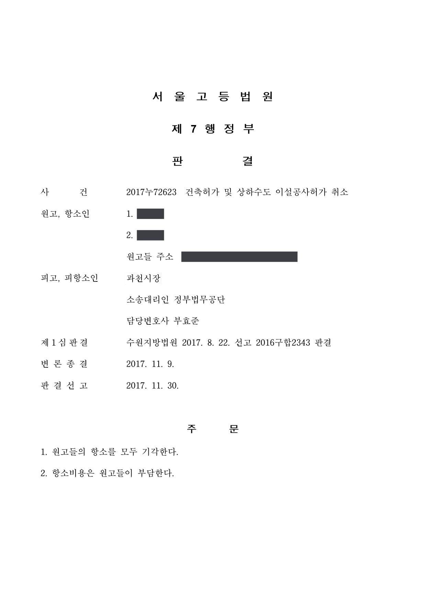

인근 주민의 건축허가 등 취소소송 (1·2심)
수원지방법원 2016구합2343 · 서울고등법원 2017누72623 · 담당변호사 부효준
판결문


사건의 요지
인접 토지 소유자 등이 제3자에게 내려진 건축신고 수리와 개발행위허가, 상하수도 이설공사 허가의 취소를 구한 사건으로, 제3자의 원고적격과 취소를 구할 법률상 이익이 쟁점이 되어 소가 각하되었습니다.
사건의 주요 내용
원고들은 어느 토지(쟁점토지)와 그 위에 있는 미등기 건물을 각각 소유한 사람들이고, 인근 3필지 토지의 소유자(건축주)는 2016년 6월 그 토지 위에 지하 1층·지상 3층, 연면적 약 99㎡의 단독주택 및 제2종 근린생활시설(사무소)을 신축하기 위하여 건축신고서와 토지형질변경을 위한 개발행위허가 신청서를 제출하였습니다. 처분청(시장)은 2016년 7월 구 건축법 제14조에 따라 건축신고를 수리하고 신고필증을 교부함으로써 건축주에게 건축허가 및 개발행위허가를 하였습니다.
원고들은 이 건축허가로 자신들의 조망권·일조권·통행권이 침해된다고 주장하면서 건축허가의 취소와, 쟁점토지 위 건축물을 위해 매설한 상하수도 이설공사 허가의 취소를 구하는 소송을 제기하였습니다. 원고 중 1명은 그에 앞서 건축주를 상대로 통행방해물배제가처분을 신청하였으나 2017년 1월 기각된 바 있습니다. 부효준 변호사는 제1심과 항소심에서 처분청을 대리하였습니다.
원고의 주장
- 건축허가로 인하여 원고들의 조망권, 일조권, 통행권이 침해되므로 허가는 취소되어야 한다고 주장하였습니다.
- 처분청이 토지형질을 변경하지 않은 채 건축허가를 내어준 것은 위법하다고 주장하였습니다.
- 처분청이 쟁점토지 위 건축물을 위하여 매설한 상하수도 이설공사 허가도 취소되어야 한다고 주장하였습니다.
부효준 변호사의 주장
- 원고들은 건축허가가 있음을 안 날로부터 90일이 지나 소를 제기하였으므로 제소기간을 넘겨 부적법하다고 항변하였습니다.
- 건축허가와 그에 따른 건물 신축은 원고들의 통행에 지장을 주지 않고 건물 규모에 비추어 일조권 등에도 문제가 없으므로, 원고들에게는 건축허가의 취소를 구할 법률상 이익이 없어 소가 부적법하다고 본안전항변을 하였습니다.
- 원고들이 처분청에 낸 민원은 조망·일조·통행 침해가 아니라 건축주 토지를 양도받아 쟁점토지를 개발하려는 내용이었고 관련 가처분 사건에서도 통행권이 인정되지 않았으므로, 원고들이 내세우는 이익은 재산상·간접적 이익에 그친다는 점을 지적하였습니다.
법원의 판단
법원은 제소기간 항변은 받아들이지 않았습니다. 원고 중 1명이 허가 전에 건축허가를 불허해 달라는 민원을 냈고 건축주가 2016년 7월 착공하였다는 사정만으로는 원고들이 소 제기 90일 전에 처분을 알았다고 보기 어렵고, 원고들은 2016년 9월 말 무렵에야 허가 취소와 공사 중지를 요청하는 민원을 제기하였기 때문입니다.
그러나 원고적격에 관하여는, 처분의 직접 상대방이 아닌 제3자는 근거 법규 및 관련 법규에 의하여 보호되는 개별적·직접적·구체적 이익이 처분으로 직접 침해될 가능성이 있어야 하고 이를 원고가 주장·증명해야 한다는 법리(대법원 2006. 3. 16. 선고 2006두330 판결)를 전제로, 국토계획법령의 개발행위허가 기준은 인근 주민이 참을 한도를 넘는 생활환경 침해를 받지 않을 개별적 이익을 보호하지만, 원고들이 제출한 증거만으로는 조망권·일조권·통행권이 참을 한도를 넘게 침해되었다고 인정할 수 없다고 보았습니다.
특히 원고들이 민원 단계에서 조망·일조·통행 침해를 언급하지 않았고 관련 가처분 사건에서 통행권이 부정되었으며, 허가 취소를 구하는 진정한 이유는 건축주 토지를 양도받지 못하면 쟁점토지의 개발이 어려워지고 가치가 하락한다는 재산상 이익에 있다고 보아, 이는 일반적·간접적·추상적 이익에 불과하다고 판단하였습니다. 상하수도 이설공사 허가는 그러한 처분이 있었다고 인정할 증거가 없어 존재하지 않는 처분의 취소를 구하는 것이라고 보았습니다. 이에 따라 2017년 8월 소를 모두 각하하였고, 원고들이 건축허가 부분만 항소하였으나 서울고등법원은 2017년 11월 제1심 판단이 정당하다며 항소를 기각하였습니다.
행정소송법 제12조 제1문은 "취소소송은 처분등의 취소를 구할 법률상의 이익이 있는 자가 제기할 수 있다."라고 규정하고 있으므로, 행정처분의 직접 상대방이 아닌 제3자라 하더라도 당해 행정처분으로 인하여 법률상 보호되는 이익을 침해당한 경우에는 그 처분의 취소나 무효확인을 구하는 행정소송을 제기하여 그 당부의 판단을 받을 자격이 있고, 여기에서 말하는 법률상 보호되는 이익이라 함은 당해 처분의 근거 법규 및 관련 법규에 의하여 보호되는 개별적ㆍ직접적ㆍ구체적 이익이 있는 경우를 말하고, 공익보호의 결과로 국민 일반이 공통적으로 가지는 일반적ㆍ간접적ㆍ추상적 이익이 생기는 경우에는 법률상 보호되는 이익이 있다고 할 수 없다(대법원 2006. 3. 16. 선고 2006두330 판결 등 참조). 따라서 당해 처분의 취소를 구하는 제3자에게 원고적격이 인정되기 위해서는, 그 전제로서 당해 처분의 근거 법규 및 관련 법규의 명문규정 또는 합리적 해석에 의하여 개별적, 구체적 이익이 보호됨이 인정되어야 할 뿐만 아니라, 당해 처분의 근거 법규 및 관련 법규에 의하여 보호되는 제3자 자신의 개별적, 구체적 이익이 당해 처분에 의하여 직접적으로 침해당할 가능성이 있어야 하고, 이러한 사정은 원고들이 이를 주장ㆍ증명하여야 한다.
수원지방법원 2016구합2343 판결 이유 '3. 가. 이 사건 허가의 취소에 관한 판단 — 1)' 부분
위와 같은 규정의 취지는, 개발행위허가로 인하여 직접적인 생활환경 피해를 입으리라고 예상되는 일정한 범위 내의 지역주민이 전과 비교하여 참을 한도를 넘는 생활환경 침해를 받지 아니하고 쾌적한 환경에서 생활할 수 있는 개별적 이익까지도 보호하려는 데 있다고 할 것이므로, 그와 같은 지역주민이 해당 처분의 취소에 관하여 갖는 환경상의 이익은 국토계획법에서 보호하는 개별적ㆍ직접적ㆍ구체적 이익에 해당한다.
수원지방법원 2016구합2343 판결 이유 '3. 가. 3)' 부분
앞에서 본 인정사실, 사정, 변론 전체의 취지를 종합하면 원고들이 이 사건 허가의 취소를 구하는 진정한 이유는 이 사건 허가로 인하여 원고들의 조망권, 일조권, 통행권이 침해되었기 때문이 아니라 결국 건축주가 이 사건 허가토지 위에 건물을 건축할 경우 원고들은 건축주 소유의 토지를 양도받지 못하게 되어 원고들이 소유 또는 점유하고 있는 이 사건 쟁점토지의 개발이 어려워지거나 위 토지의 가치가 하락하기 때문이라고 보이고, 이러한 원고들의 재산상 이익은 행정절차상 국민 일반이 공통적으로 가지는 일반적ㆍ간접적ㆍ추상적 이익에 불과하다고 봄이 타당하다. 따라서 원고들은 이 사건 허가로 인해 법률상 보호되는 이익이 직접적으로 침해당할 가능성이 있는 제3자에 해당하지 않아 이 사건 허가의 취소를 구할 법률상 이익이 있다고 볼 수 없으므로 이 부분 소는 부적법하다.
수원지방법원 2016구합2343 판결 이유 '3. 가. 6), 7)' 부분
※ 판결 이유 가운데 이 사건의 판단 기준이 된 부분을 그대로 옮긴 것으로, 당사자 이름 등은 가렸습니다.
이 사건이 보여 주는 것
이웃의 건축허가를 다투는 소송에서는 허가가 위법한지보다 먼저 '누가 다툴 수 있는지'가 문제됩니다. 건축법·국토계획법령은 인근 주민이 참을 한도를 넘는 생활환경 침해를 받지 않을 이익을 보호하지만, 조망·일조·통행 침해가 참을 한도를 넘는다는 점은 원고가 증명해야 하고, 그 증명이 없으면 본안 판단에 들어가지 않고 소가 각하됩니다.
이 사건에서는 원고들이 행정청에 낸 민원의 내용(인접 토지의 양도 요구)과 별도 가처분 사건의 결과가 '진정한 이유'를 가려내는 자료로 쓰였습니다. 처분청을 대리하는 입장에서는 민원 기록과 관련 민사 사건의 결과를 모아 원고의 이익이 재산상·간접적 이익에 그친다는 점을 보이는 것이 효과적인 방어가 됩니다.
관련 법령행정소송법 제12조 · 구 건축법(2017. 1. 17. 법률 제14535호로 개정되기 전의 것) 제11조, 제12조 제1항, 제14조 제1항 제5호 · 건축법 시행령 제11조 제3항 제1호 · 국토의 계획 및 이용에 관한 법률 제56조 제1항, 제58조 제1항 제4호·제3항 · 국토의 계획 및 이용에 관한 법률 시행령 제56조 제1항 [별표 1의2]
관련 단어건축허가 취소소송건축신고 수리개발행위허가제3자 원고적격법률상 이익일조권조망권통행권참을 한도소 각하제소기간국토계획법
이 사건의 소개 글은 인스타그램(@lawyer.boo)에도 있습니다.
비슷한 처분을 받으셨다면
행정처분은 처분이 있음을 안 날부터 90일 이내에 행정심판이나 취소소송으로 다투어야 하고, 기간이 지나면 돌이킬 수 없는 처분은 집행정지를 서둘러야 합니다. 처분서를 받은 날짜부터 확인해 드립니다.